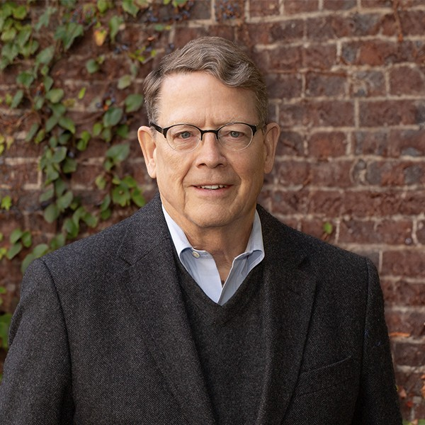

Greg Miller
Appellate lawyer, Carney Badley Spellman (Seattle)
- Seat
- Position 5 — Madsen seat — special election
- Appointing authority
- Not applicable.
- Background
- Shareholder and founding member of the Appellate Group at Carney Badley Spellman (2008–present). Admitted to the Washington bar in 1984 (WSBA No. 14459). Earlier: judicial law clerk at the WA Court of Appeals Div. I (assisted on 75 appeals), judicial extern at the U.S. District Court, Seattle municipal court prosecutor, and staff counsel to the WA Senate Health and Long-Term Care Committee (1990). Pro tem judge, Seattle Municipal Court.
- Reported endorsements
- None publicly reported as of May 28, 2026. Campaign website (millerforjustice.org) has no endorsements page and no listed endorsers; the site asks supporters to 'endorse Greg publicly' via a form.
- Fundraising
- PDC: $0.00 raised, $0.00 spent, $0.00 debt, $0.00 outside money for/against (as of May 28, 2026). Declared candidate but no contributions filed. Campaign accepts donations on millerforjustice.org/donate (max $4,800).
What the record actually shows
Facts pulled from public sources: who appointed them, what they did before, what they've said or written, who's backing them. We're not predicting any vote. Why these categories?
-
His background
WSBA No. 14459 since 1984. Campaign now claims 145+ merits appeals briefed, 85+ argued, and 27+ amicus filings across the Washington appellate courts, Ninth Circuit, and U.S. Supreme Court. Pure appellate practitioner, no full-time bench experience. Harvard cum laude, J.D. Northeastern.
-
How he talks about the law
Campaign site is deliberately policy-free. Says 'justices don't run on policy.' No mention of originalism, textualism, judicial restraint, or stare decisis as concepts. Taglines: 'Fair. Independent. For Washington' and 'No favors owed.' He highlights Keene v. Edie, where he successfully argued the court should overturn a 107-year-old precedent — so he is comfortable moving off long-settled law when he thinks it is wrong.
-
Who's backing him
No endorsements located as of May 28, 2026. Campaign site has no endorsement page. Wikipedia's race table shows zero endorsers. None of the institutional patterns visible for the other three Pos 5 candidates (Angelis: Democratic establishment, Larson: WSRP + Future 42, Amamilo: Justice Whitener) appear here. He is the only Pos 5 candidate without an identifiable coalition.
-
His tax record
Nothing public on Article VII, Culliton, Quinn, or ESSB 6346. The campaign site doesn't touch any of it. His featured cases are health-law, workers-comp, jail accountability, and a sex-abuse civil claim. Tax uniformity is not in his located record.
-
His money
PDC: $0 raised, $0 spent as of May 28, 2026, two months before the August primary. Donation page exists but no contributions filed. By contrast Angelis has ~$143K and Larson ~$136K. Without money he is unlikely to make the top two.
How this candidate is likely to rule, and why.
Greg Miller now has a live campaign site at millerforjustice.org and a clearer self-presentation, but on the question that matters here, Article VII and the income tax, the record is still empty by design.
The site's explicit pitch is that 'justices don't run on policy, they run on the work they have done and the way they think about doing it.' That is the entire judicial philosophy section. No mention of Culliton, Quinn, ESSB 6346, the uniformity clause, originalism, textualism, judicial restraint, or stare decisis as a concept.
The taglines are 'Fair. Independent. For Washington' and 'No favors owed,' which read as a mild jab at the Ferguson appointment network without taking any substantive position. What the site does add is detail on his cases and his bar work.
Forty years at the Washington bar, 145+ briefed appeals, 85+ oral arguments, 27+ amicus briefs. Twenty years on the King County Bar Judicial Evaluation Committee including a term as chair. Pro tem on Seattle Municipal Court. Featured cases include Iva Jennings (working-class L&I win), Keene v.
Edie (where he successfully argued to overturn a 107-year-old precedent to compensate a sex-abuse victim), Anderson v. Grant County (jail accountability amicus the court adopted), and Beard v. Everett Clinic (9-0 affirmance for the medical-association amicus). The Keene v.
Edie framing is the most interesting tell: he is openly proud of having moved the court off long-settled precedent when he thought it was wrong. That cuts both ways on Culliton. It rules out a stare-decisis-uber-alles defense of the 1933 ruling, but it also doesn't tell you which direction he'd push. Coalition signals remain neutral-to-mildly-keep.
PDC still shows $0 raised, $0 spent. No party endorsement, no sitting judges or justices on board, no bar association picks, no Federalist Society or Future 42 footprint, no progressive movement framing either. He is the only Position 5 candidate without an identifiable patronage network.
With no money and no endorsement infrastructure behind him, he is unlikely to be a finalist, but if he advances he is a genuine wild card. Recommendation: hold at unclear, low confidence.
-
Forty-plus years inside the Seattle appellate bar
Miller has been a Washington lawyer since 1984. He clerked at the Court of Appeals Division I for Judge Ken Grosse (~75 appeals), externed in U.S. District Court, and has practiced appeals continuously for over four decades. He co-founded the King County Bar Association's Appellate Law Section in 2005 and chaired it.
He is a founding member of the Washington Appellate Lawyers Association (2000), chaired its judicial CJE programs, and has spent twenty years on the KCBA Judicial Evaluation Committee, including a term as chair. That is the resume of a career institutionalist embedded in the Seattle legal establishment, not a movement-aligned candidate.
-
Has worked both sides of the state
In 2025 Miller was retained as a Special Assistant Attorney General representing UW Medicine in a Washington Supreme Court amicus filing (Snyder v. Virginia Mason). In 2015 he argued and won Washington State Hospital Association v. Department of Health, 183 Wn.2d 590, where the court held DOH exceeded its certificate-of-need authority.
The campaign site now leans into this duality, listing both institutional clients (medical associations, hospitals, UW Medicine) and working-class clients (Iva Jennings's L&I claim). Either he is genuinely cross-ideological or he is selling that framing for tactical reasons. The record supports the first read more than the second.
-
He has overturned long precedent before
The campaign's flagship case story is Keene v. Edie, where Miller successfully argued the Washington Supreme Court should overturn a 107-year-old precedent to protect a sex-abuse victim while sparing the innocent spouse from liability. He volunteers that example. That tells you he is not a stare-decisis-uber-alles defender of old rulings as a matter of principle. It does not tell you which direction he would push on Culliton, but it rules out the cleanest 'defend the 1933 ruling because it is old' posture.
-
No conservative coalition footprint, no progressive coalition footprint either
Angelis carries the Democratic establishment, sitting justices, and the governor. Larson carries the Washington State Republican Party, Future 42, and Federalist Society-adjacent training. Amamilo has Justice Whitener and Thurston County. Miller has long-running KCBA leadership, MLK Luncheon Committee tenure, and a 'no favors owed, doesn't fit a partisan box' campaign framing. No party endorsement, no movement training, no surfaced fundraising. Hugh Spitzer's April 2026 comment that 'there are few conservative candidates running' implicitly excludes him from the overturn coalition. Suggestive, not dispositive.
-
No money is its own signal
Eight weeks before the August 4 primary, Miller has filed $0 with the PDC. His three Pos 5 opponents have raised between $97K and $143K. A 40-year appellate veteran with deep KCBA ties who cannot or will not pull $20K in two months is either running a vanity campaign, running purely to raise his profile, or genuinely uninterested in the money mechanics. Whatever the reason, voters are unlikely to know who he is by August.
An analytical read on public signals. Not a prediction of any individual vote.
Questions a voter might ask this candidate
- How would you approach a request to overturn a 90-year-old precedent like Culliton?
- Does your appellate practice include any constitutional tax or revenue cases the public can review?
- Which Washington Supreme Court justices, sitting or retired, best reflect your judicial philosophy?
- You've served the state (Special AAG for UW Medicine) and challenged state agencies (DOH in WSHA). How do you decide when a state institution has exceeded its authority?
Phrased to comply with Washington's Code of Judicial Conduct, which prohibits candidates from pledging votes on specific cases or issues likely to come before the court. Methodology questions are permitted.
Sources
- Carney Badley Spellman bio: Gregory M. Miller
- Wikipedia: 2026 Washington Supreme Court election
- Carney Badley Spellman: Gregory M. Miller (firm CV PDF)
- Gregory M. Miller LinkedIn profile
- Snyder v. Virginia Mason — UW Medicine amicus joinder (Miller as Special AAG, 2025)
- Columbia Basin Herald: WA Supreme Court races could decide fate of income tax (April 2026)
- The Daily World: WA Supreme Court races shape up as income tax case looms (May 2026)
- Greg Miller for Justice (campaign website)
- Why Greg — campaign rationale and cases
- WA Public Disclosure Commission — Gregory M. Miller candidate record
- Are you Greg Miller or their campaign? Submit a response →